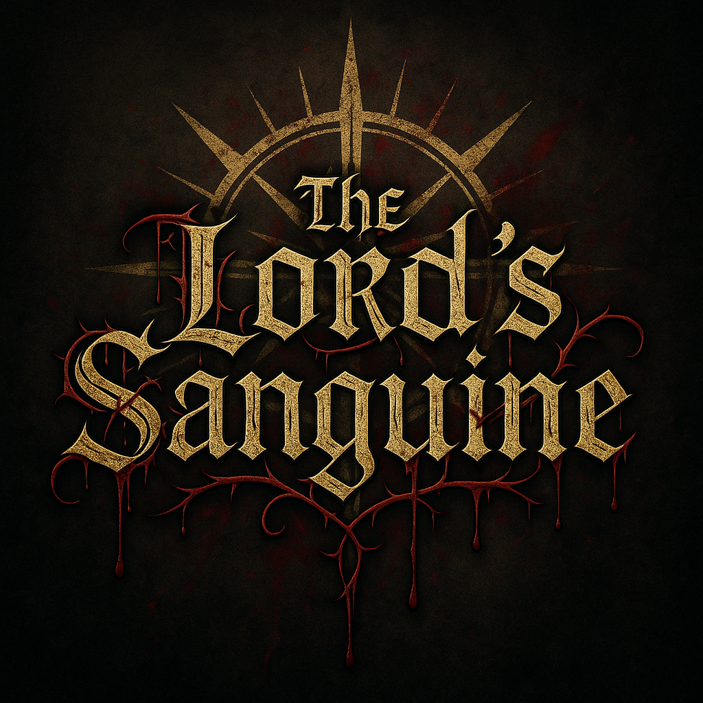
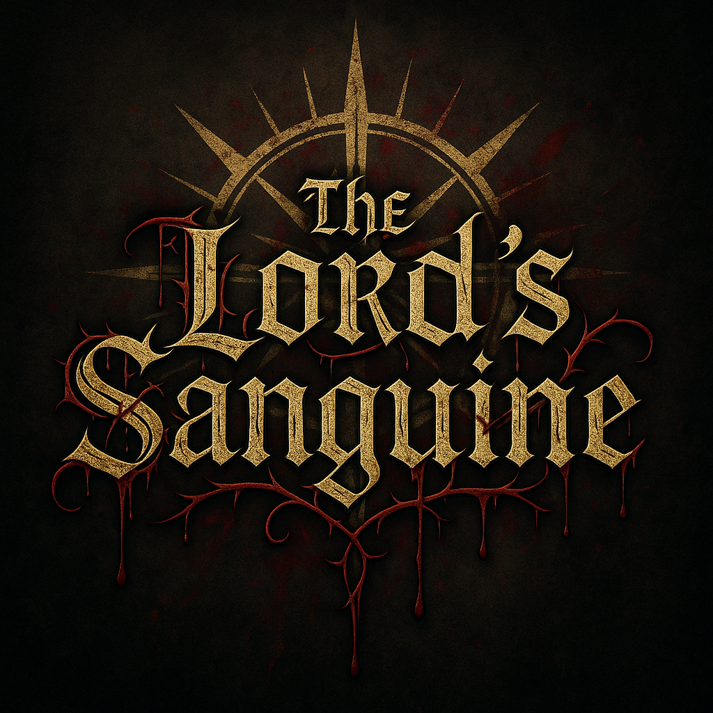

Dev Update #1
We've begun work on the movement systems for the player character. This includes wall sliding, grabbing ledges, and rolling!
Tyrannical Games was founded by ex-Rockstar Games developers with one mission — to craft unique indie experiences unafraid of innovation, depth, and bold worlds.
Explore The Lord's SanguineA dark, atmospheric journey through a cursed land where every decision bleeds consequence. The Lord's Sanguine is an action RPG with Roguelite mechanics and colony simulation. Deep mechanics. Brutal choices. True immersion.
 


We've begun work on the movement systems for the player character. This includes wall sliding, grabbing ledges, and rolling!
Tyrannical Games officially opens its doors. Formed by ex-Rockstar Games employees, we aim to create unforgettable worlds and mechanics.
Got questions, press inquiries, or partnership ideas? Reach out to us: